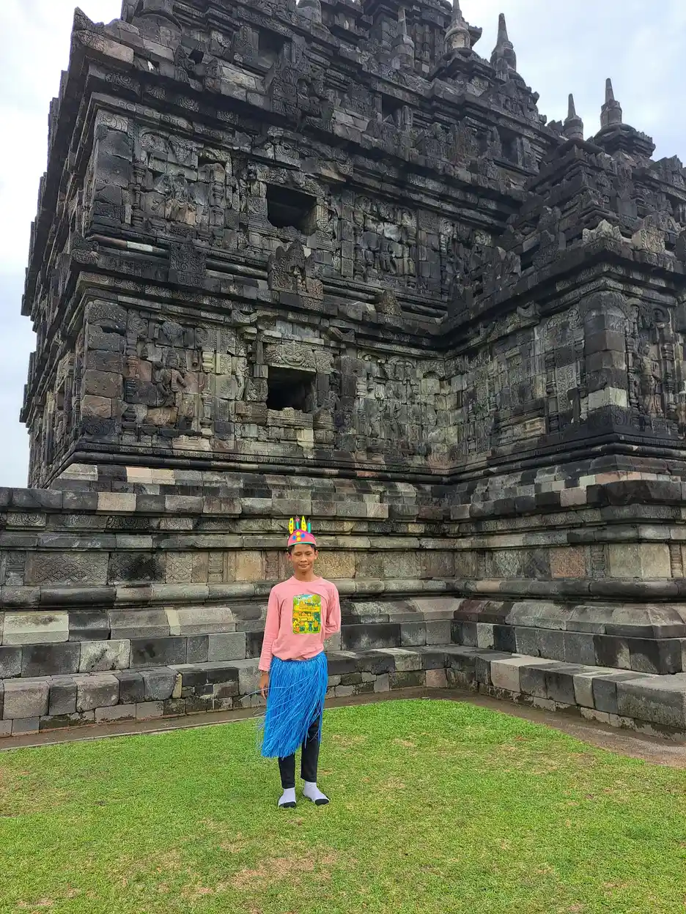

Hari Autis Sedunia diperingati setiap 2 April, tetapi maknanya tidak seharusnya berhenti pada unggahan, warna, atau slogan satu hari. Langkah yang lebih penting adalah bergerak dari sekadar tahu bahwa autisme ada menuju penerimaan terhadap orang autistik sebagai manusia utuh yang memiliki hak, pilihan, kekuatan, kebutuhan dukungan, dan cara berkomunikasi yang beragam. Penerimaan bukan berarti mengabaikan kesulitan. Penerimaan berarti menanggapi kesulitan dengan dukungan yang layak tanpa merendahkan identitas seseorang.
Dalam artikel ini saya menggunakan bahasa yang menghormati pilihan individu. Sebagian orang memilih sebutan orang autistik, sedangkan sebagian lain memilih orang dengan autisme. Keduanya patut didengar. Keluarga, sekolah, layanan kesehatan, tempat kerja, media, dan penyelenggara ruang publik dapat memakai peringatan ini untuk memeriksa hambatan nyata, bukan berbicara atas nama orang autistik tanpa melibatkan mereka.
Untuk konteks lanjutan, baca memahami autisme, pendidikan inklusi, dukungan sekolah untuk anak autistik.
Makna Hari Autis Sedunia Saat Ini
Peringatan global memberi kesempatan untuk memperluas pengetahuan tentang autisme sekaligus menilai apakah pengetahuan itu mengubah perilaku. Kesadaran menjawab bahwa autisme ada. Pemahaman membantu orang mengenali keragaman pengalaman. Penerimaan mengakui martabat dan hak. Tindakan mengubah kebijakan, komunikasi, lingkungan, serta alokasi dukungan. Keempatnya perlu berjalan bersama agar peringatan tidak menjadi seremoni kosong.
Autisme merupakan kondisi perkembangan yang berkaitan dengan perbedaan komunikasi dan interaksi sosial serta pola perilaku, minat, atau aktivitas. Profil setiap orang berbeda. Ada yang memerlukan dukungan intensif sepanjang hidup, ada yang hidup lebih mandiri, dan banyak orang berada di antara kedua gambaran tersebut. Hari peringatan sebaiknya tidak hanya menampilkan kisah keberhasilan yang luar biasa atau kesulitan yang ekstrem karena keduanya dapat menutupi keragaman nyata.
Mengapa Kesadaran Saja Belum Cukup
Seseorang dapat mengetahui istilah autisme tetapi tetap mengejek gerakan repetitif, memaksa kontak mata, menolak alat komunikasi, atau menganggap kebutuhan sensorik sebagai perilaku buruk. Inilah batas kesadaran tanpa pemahaman. Pengetahuan baru berguna bila membuat kita berhenti menilai terlalu cepat dan mulai bertanya dukungan apa yang memungkinkan seseorang berpartisipasi.
Kesadaran juga dapat terjebak pada sudut pandang orang nonautistik. Acara membahas anak dan dewasa autistik, tetapi panel, perencanaan, dan evaluasinya tidak melibatkan mereka. Menurut saya, prinsip sederhana yang perlu dijaga adalah tidak membuat keputusan tentang kelompok tanpa suara kelompok tersebut. Pelibatan harus aksesibel, aman, dibayar secara layak bila berupa kerja profesional, dan tidak menjadikan satu orang sebagai wakil seluruh spektrum.
Seperti Apa Penerimaan dalam Kehidupan Nyata
Penerimaan terlihat dalam tindakan kecil yang konsisten. Guru memberi waktu pemrosesan, menyediakan instruksi visual, dan mengizinkan jeda sensorik. Keluarga menghargai cara komunikasi anak serta tidak memaksa penampilan sosial demi kenyamanan orang lain. Tenaga layanan menjelaskan prosedur dengan jelas. Penyelenggara acara menyediakan informasi tentang suara, cahaya, kepadatan, dan tempat tenang sebelum kegiatan dimulai.
Penerimaan tidak berarti semua perilaku dibiarkan tanpa batas. Keselamatan, kesehatan, dan hak orang lain tetap penting. Bedanya terletak pada cara merespons. Tim mencari fungsi, pemicu, kebutuhan komunikasi, dan penyesuaian lingkungan sebelum menggunakan hukuman. Sasaran dukungan diarahkan pada kualitas hidup, pilihan, komunikasi, regulasi, relasi, dan partisipasi, bukan sekadar membuat seseorang tampak tidak autistik.
Bahasa, Simbol, dan Representasi yang Menghormati
Bahasa sebaiknya tidak menggambarkan orang autistik sebagai beban, tragedi, atau teka-teki yang harus dipecahkan. Hindari pula klaim bahwa kasih sayang orang tua dapat menyembuhkan autisme. Autisme bukan akibat kurangnya pengasuhan, dan tidak ada satu metode yang sesuai untuk semua orang. Gunakan foto serta cerita dengan izin, lindungi informasi kesehatan, dan jangan menjadikan momen sulit seseorang sebagai konten tanpa persetujuan.
Pilihan istilah dapat berbeda. Bila berkomunikasi dengan individu, tanyakan sebutan yang disukai. Bila menulis untuk kelompok luas, jelaskan pilihan bahasa dan gunakan secara konsisten. Representasi yang baik memperlihatkan orang autistik dengan beragam kebutuhan dukungan, usia, jenis kelamin, latar ekonomi, dan cara komunikasi. Cerita tentang kegembiraan dan minat penting, begitu pula pembahasan jujur tentang akses layanan dan dukungan bagi mereka yang memerlukan bantuan besar.
Dari Penerimaan ke Praktik di Sekolah
Sekolah inklusif bukan hanya menerima pendaftaran. Sekolah perlu mengidentifikasi hambatan pada kurikulum, komunikasi, lingkungan sensorik, penilaian, interaksi teman, serta transisi antarkegiatan. Dukungan dapat berupa jadwal visual, pilihan cara menjawab, tempat tenang, tugas yang dipecah, teknologi bantu, pendampingan, dan pengajaran eksplisit tentang meminta bantuan. Penyesuaian harus berdasarkan kebutuhan individual, bukan label semata.
Teman sebaya juga perlu belajar menghargai perbedaan tanpa membocorkan diagnosis anak. Program antibullying, aturan kelas yang jelas, dan kegiatan kolaboratif lebih bermakna daripada meminta anak autistik menyesuaikan diri sendirian. Keluarga membawa informasi tentang komunikasi dan rutinitas, guru membawa pengamatan pembelajaran, sedangkan anak membawa pengalaman langsung. Ketiganya perlu didengar saat menyusun dukungan.
Peran Keluarga dan Komunitas
Keluarga dapat memulai dengan mendengarkan, mengamati pola, dan mencatat strategi yang membantu. Pilihan tidak selalu disampaikan lewat kalimat. Gambar, gestur, alat komunikasi, ekspresi, pendekatan, dan penghindaran dapat memberi informasi. Interpretasi orang dewasa perlu diuji berulang agar tidak dianggap sebagai suara anak secara otomatis.
Komunitas dapat mengaudit akses kegiatannya. Apakah informasi tersedia sebelum acara? Apakah peserta boleh memakai pelindung telinga, bergerak, atau keluar masuk? Apakah petugas memahami komunikasi alternatif? Apakah formulir dan antrean dapat disesuaikan? Akses tidak selalu mahal. Kejelasan, fleksibilitas, dan sikap tidak menghakimi sering menghasilkan perubahan besar, walaupun sebagian orang juga membutuhkan dukungan khusus yang memerlukan anggaran.
Cara Membuat Kampanye yang Tidak Tokenistik
Mulailah dari tujuan yang dapat diperiksa. Contohnya, melatih petugas layanan, menerbitkan panduan akses sensorik, memperbaiki prosedur akomodasi, atau membentuk kelompok konsultasi yang melibatkan orang autistik. Tentukan penanggung jawab dan tanggal evaluasi. Kampanye yang hanya mengukur jumlah tayangan berisiko kehilangan hasil yang penting bagi kehidupan.
Periksa mitra dan pesan sebelum dipublikasikan. Jangan menjanjikan penyembuhan, menyebarkan tes diagnosis daring sebagai kepastian, atau menggunakan rasa takut untuk menggalang dukungan. Sediakan format aksesibel, teks alternatif gambar, takarir video, dan bahasa yang mudah dipahami. Setelah 2 April berlalu, laporkan perubahan yang telah dilakukan serta bagian yang belum selesai.
Dukungan Berbasis Kebutuhan, Bukan Stereotip
Dua orang dengan diagnosis yang sama dapat membutuhkan dukungan berbeda. Seorang anak mungkin berbicara lancar tetapi kesulitan memahami situasi sosial dan kelelahan setelah sekolah. Anak lain mungkin menggunakan komunikasi augmentatif dan memerlukan bantuan untuk aktivitas harian. Kemampuan juga dapat berubah menurut lingkungan, kesehatan, stres, dan tuntutan. Karena itu, label tidak boleh menjadi satu-satunya dasar keputusan.
Asesmen profesional dapat membantu memetakan perkembangan, komunikasi, kesehatan, belajar, dan fungsi sehari-hari. Namun, tujuan asesmen bukan meramal nilai seseorang. Bila keluarga melihat perubahan perkembangan atau kesulitan yang mengganggu kehidupan, konsultasikan dengan dokter anak, psikolog, psikiater, atau tenaga terkait. Hindari diagnosis mandiri dan pilih dukungan dengan manfaat, risiko, biaya, serta tujuan yang dijelaskan terbuka.
Rencana Aksi Setelah 2 April
Pilih satu lingkungan dan lakukan audit sederhana bersama pengguna. Catat hambatan komunikasi, sensorik, fisik, informasi, sikap, serta prosedur. Prioritaskan perubahan yang berdampak dan realistis. Contohnya, sekolah dapat memperbaiki jadwal transisi, klinik dapat menyediakan alur kunjungan visual, dan organisasi dapat menambahkan proses permintaan akomodasi yang jelas.
Tanyakan hasil langsung kepada orang autistik, bukan hanya kepada penyelenggara. Ukur apakah mereka lebih mudah memperoleh informasi, membuat pilihan, meminta bantuan, dan mengikuti kegiatan dengan aman. Simpan praktik yang berhasil sebagai prosedur rutin. Penerimaan baru terasa bila orang tidak harus menunggu kampanye tahunan untuk mendapatkan penghormatan dan akses dasar.
Pertanyaan Umum
Kapan Hari Autis Sedunia diperingati?
Hari Autis Sedunia diperingati setiap 2 April. Kegiatannya sebaiknya menjadi pengingat untuk melakukan perubahan akses dan penerimaan sepanjang tahun.
Apa beda kesadaran dan penerimaan autisme?
Kesadaran mengetahui bahwa autisme ada. Penerimaan menghormati identitas, hak, komunikasi, pilihan, serta kebutuhan dukungan orang autistik dan menerjemahkannya menjadi tindakan.
Apakah semua orang autistik memiliki kebutuhan yang sama?
Tidak. Profil kemampuan, tantangan, komunikasi, sensori, kesehatan, dan dukungan sangat beragam serta dapat berubah menurut situasi.
Istilah apa yang sebaiknya digunakan?
Ikuti pilihan individu. Sebagian memilih orang autistik dan sebagian memilih orang dengan autisme. Jangan memakai istilah yang merendahkan.
Apakah autisme dapat didiagnosis sendiri dari konten internet?
Tidak. Konten edukasi tidak menggantikan evaluasi profesional. Konsultasikan kekhawatiran perkembangan dengan tenaga kesehatan yang kompeten.
Apa tindakan sederhana yang dapat dilakukan sekolah?
Dengarkan anak dan keluarga, identifikasi hambatan, beri instruksi yang jelas, izinkan alat komunikasi, serta sediakan penyesuaian sensorik dan pembelajaran.
Bagaimana memastikan kampanye tidak tokenistik?
Libatkan orang autistik sejak perencanaan, tetapkan perubahan yang terukur, sediakan aksesibilitas, dan laporkan tindak lanjut setelah acara selesai.
Checklist Penerimaan untuk Organisasi
Gunakan checklist ini sebagai percakapan bersama orang autistik, bukan sebagai audit sepihak. Pada komunikasi, periksa apakah informasi utama tersedia dalam kalimat jelas, format visual, dan waktu yang cukup untuk merespons. Pada lingkungan, catat suara mendadak, cahaya menyilaukan, antrean, kepadatan, suhu, serta kemungkinan beristirahat. Pada prosedur, pastikan orang dapat meminta penyesuaian tanpa harus menceritakan seluruh riwayat medis kepada banyak petugas. Pada kegiatan, izinkan beberapa cara berpartisipasi, termasuk berbicara, menulis, menggunakan alat komunikasi, mengamati lebih dahulu, atau mengambil jeda.
Pada hubungan, tanyakan apakah staf memahami persetujuan, privasi, dan komunikasi yang berbeda. Periksa apakah candaan, aturan tidak tertulis, atau tuntutan kontak mata membuat orang tersisih. Pada keselamatan, sediakan rencana evakuasi yang mempertimbangkan komunikasi dan sensori tanpa otomatis memisahkan peserta dari kelompok. Pada evaluasi, jangan hanya menghitung kehadiran. Tanyakan apakah peserta memahami informasi, dapat membuat pilihan, merasa aman, dan ingin kembali. Beri cara umpan balik yang anonim serta aksesibel.
Setelah audit, pilih perubahan jangka pendek, menengah, dan struktural. Perubahan cepat dapat berupa panduan sebelum acara dan penanda ruang tenang. Perubahan menengah dapat berupa pelatihan staf serta prosedur akomodasi. Perubahan struktural dapat mencakup kebijakan rekrutmen, anggaran aksesibilitas, dan keterlibatan konsultan autistik. Cantumkan penanggung jawab, sumber daya, dan cara memeriksa hasil. Bila usulan belum dapat dilakukan, jelaskan alasannya secara terbuka dan cari alternatif bersama.
Kesimpulan
Hari Autis Sedunia: Dari Kesadaran ke Penerimaan perlu dipahami melalui informasi yang tepat, suara individu, dan kebutuhan nyata dalam lingkungan sehari-hari. Kategori atau pilihan layanan membantu percakapan, tetapi tidak menggantikan asesmen individual, penghormatan terhadap hak, serta evaluasi hasil yang bermakna.
Saya menyarankan keluarga dan penyelenggara layanan mencatat hambatan, memilih dukungan yang dapat dijalankan, melibatkan anak atau individu dengan komunikasi yang aksesibel, lalu meninjau dampaknya. Peringatan tahunan juga sebaiknya menghasilkan catatan tindak lanjut yang dapat diperiksa. Contohnya, sekolah dapat memilih satu hambatan akses untuk diperbaiki dalam tiga puluh hari, menunjuk penanggung jawab, dan meminta umpan balik langsung dari peserta didik serta keluarganya. Pendekatan ini membuat penerimaan terlihat dalam keputusan sehari-hari, bukan hanya dalam slogan kampanye. Pelajari juga memahami autisme, pendidikan inklusi, dukungan praktis untuk anak autistik, atau lihat program pendidikan YUKA.
Sumber Resmi dan Referensi
- WHO: Autism
- NIMH: Autism Spectrum Disorder
- American Psychological Association: Autism Spectrum Disorder
- UNESCO: Inclusion in Education
- UNICEF: Inclusive Education